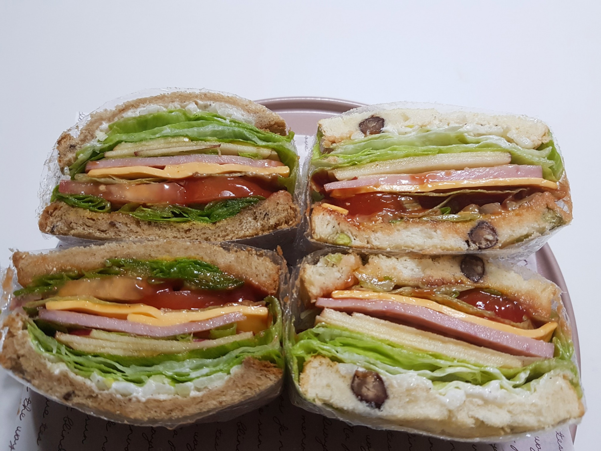

🤗 Sandwich

Description
This is the recipe of Sandwich.
Let's try it!
Ingredients
Ham 8 slices
Onion 1 EA
White bread 4 slices
Cheese 5 slices
Lettuce As much as you wish
Apple 1/2 EA
Tomato 2 EA
Mayonnaise
Black pepper a little
Mustard sauce
Ketchup or Strawberry jam
Steps
Toast 4 pieces of white bread for 4 minutes in the oven.
Prepare the vegetables and fillings in advance.
Chop the onion, mix with the mayonnaise, and add a pinch of pepepr.
Spread the onion on the toasted bread.
Stack the slices in the following order:
Lettuce, apple, cheese, tomato, and ham
Drizzle with ketchup and top with additional lettuce.
Spread mustard sauce on the bun to cover.